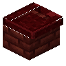

红色下界砖水槽
Red Nether Bricks Sink
英文名: Red Nether Bricks Sink命名空间 ID:
candlelight:red_nether_bricks_kitchen_sink类型: 方块所属模组: [Let's Do] Candlelight资料检索: 🔎 在 MC百科 搜索「红色下界砖水槽」合成获得 (1)


原始 JSON
{
"type": "minecraft:crafting_shaped",
"group": "red_nether_bricks_kitchen",
"pattern": [
"iCi",
"BBB"
],
"key": {
"i": {
"item": "minecraft:iron_ingot"
},
"C": {
"item": "minecraft:cauldron"
},
"B": {
"item": "minecraft:red_nether_bricks"
}
},
"result": {
"id": "candlelight:red_nether_bricks_kitchen_sink"
}
}